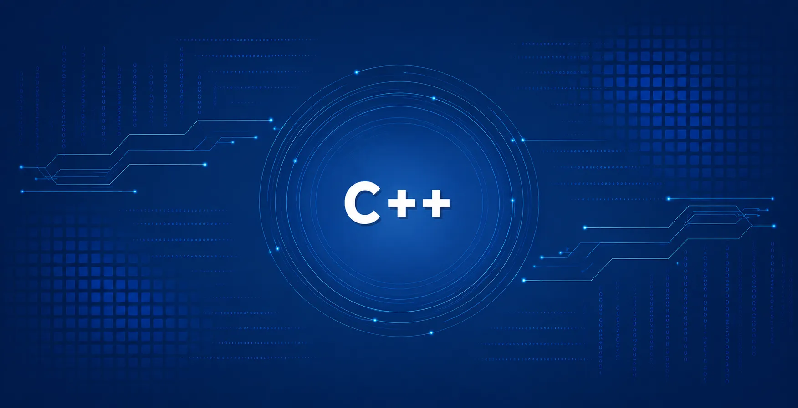

Filmster - Un proyecto de programación en C++
Hace tiempo que programo, empecé con Java durante la FP de desarrollo de aplicaciones web donde aprendí las bases de programación, orientación a objetos, variables, estructuras de control, algoritmos, etc. Me encantaba Java a pesar de ser tan *verbose* y estricto y a pesar de sus horribles IDEs, pero reconozco tiempo después que fue un gran lenguaje en el que iniciarme. Gracias a empezar con él entiendo perfectamente algunos conceptos que si hubiera empezado con lenguajes de más alto nivel como Python me hubiera costado entender. Después continuamos con JavaScript para el frontend y PHP con Laravel para el backend, y ambos fueron realmente interesantes y reforzaron todo aquello que ya conocía. Yo venía de trastear con la ciberseguridad y más concretamente con el pentesting, así que eran dos lenguajes que había visto mucho del lado del atacante en pentesting web.
Pero había un lenguaje clásico que siempre tenía en la cabeza, había oído hablar de él toda la vida y gran parte del software que utilizaba en mi día a día estaba programado en él, desde mis herramientas de pentesting a mis videojuegos favoritos, incluso software embebido en mis aparatos electrónicos. Ese lenguaje era C y C++, así que pensé: ¿por qué no pasas unos días aprendiendo la sintaxis, simplemente vas a W3Schools, tomas notas sobre ello en tu Obsidian y cuando tengas una base, te pones a realizar algún proyectillo divertido? Y eso hice.
Me empujaban principalmente 3 motivos para aprender C++:
- Aprender en profundidad un lenguaje que me permitiera entender mejor la gestión de la memoria.
- Aprender un lenguaje que también pudiera aplicar a sistemas embebidos.
- Escapar del AI-Dooming
>> Explico este último punto. La IA es una herramienta fantástica, pero si estás aprendiendo programación, redes, sistemas, ciberseguridad o lo que sea, utilizarla correctamente es fundamental. La IA puede ayudarte a entender cosas mejor, es realmente buena explicando conceptos complejos, pero si la utilizas para "no pensar", es un desastre. Dicho esto, considero que antes de utilizar agentes y demás, uno debe aprender bien los fundamentos y bases de la programación, enfrentarse a problemas reales, hacer funcionar la cabeza durante un tiempo; entrenar básicamente. Puede que la IA vuelva inútiles muchas funciones que hoy en día aprendemos, pero dejar de aprenderlas es un error.
Pues bien, llegados aquí toca contar de qué trata mi proyecto. Se llama Filmster y simplemente es un registrador de películas que te permite exportar en formato Markdown una lista de películas.
No va a revolucionar el mundo tecnológico y seguramente su repositorio solo lo visite yo, pero llevo unas semanas desarrollándolo y, sinceramente, me lo estoy pasando en grande y me ha enseñado a tener un nivel base bastante decente en C++, así que por lo pronto, objetivo cumplido.
Con este proyecto he aprendido gestión de memoria con punteros, estructuras de datos como vectores, arrays, maps; cómo gestionar archivos, abrirlos, modificarlos, borrarlos, crear directorios... También he aprendido a hacer llamadas a una API con la librería CPR, gestionar una base de datos local con JSON, gestionar dependencias con CMake; en fin, lo básico. Todo esto lo sabía hacer en Java, pero me ha alegrado ver que trasladar ese conocimiento de un lenguaje al otro ha sido tan sencillo.
A continuación muestro las funciones principales del software.

Cada película se representa como un objeto de la clase
Pelicula. Al crearse, se persiste en un archivo JSON que
actúa como base de datos local. Al iniciar la función
main, el sistema lee este JSON para poblar un
vector de objetos Pelicula, evitando que las demás
funciones interactúen directamente con la base de datos.


Para consultar o modificar las películas, el sistema opera directamente sobre el vector en memoria, garantizando una respuesta rápida por consola y sincronizando los cambios con el JSON.


Como he dicho, el programa es un proyecto para aprender las bases de C++ y no pretende ser perfecto ni innovador, pero poco a poco lo voy a ir puliendo para mejorar su aspecto y tengo una serie de mejoras ya pensadas y que he añadido al roadmap que se contempla en el README del proyecto.
Entre las mejoras están la de añadir una GUI para aprender cómo gestionar ventanas gráficas en C++, añadir exportaciones a otro tipo de formatos como PDF, que se exporte la imagen de portada en local y pulir errores de lógica y optimización.
Llegados a este punto puedo decir que me encanta programar con C++, un lenguaje que sin duda seguiré investigando y con el que voy a realizar futuros proyectos.
Podéis encontrar el repositorio de código en mi GitHub: Aquí.
¡Gracias por leer y hasta la próxima!
EnRoot